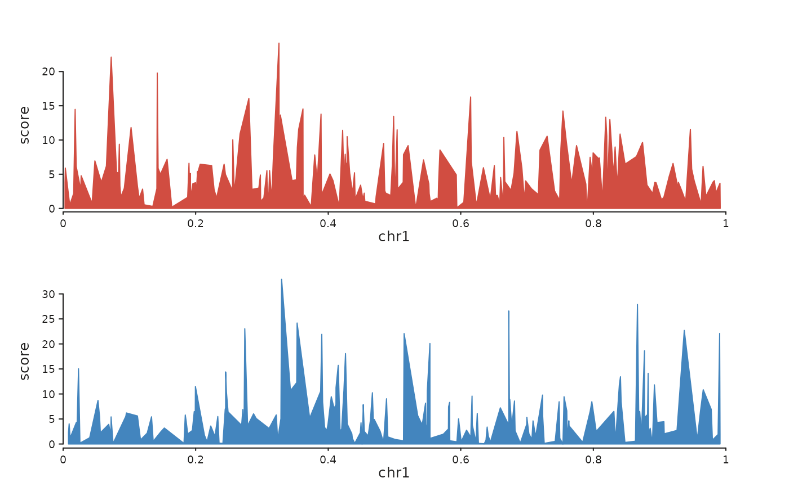

For each sample, seq_chip() stacks a seq_area() coverage track
on top of an optional seq_bar() peak track, colouring both from
the sample's colour. Tracks flow top-to-bottom (each one uses
direction = "under"), so the returned SeqPlot is a single
column of stacked tracks.
Usage
seq_chip(
data,
windows,
sample_col = NULL,
signal_col = NULL,
peaks = NULL,
peak_col = NULL,
colors = NULL,
scale_max = NULL,
signal_height = 1,
peak_height = 0.25,
show_genes = NULL,
track_id_prefix = "",
legend = NULL,
show_legend = TRUE,
...
)Arguments
- data
Either a named
listofGRanges(one per sample), or a singleGRangeswith a sample column (pass its name viasample_col). Each signalGRangesmust carry a numeric signal column (auto-detected).- windows
GRangesdefining the view region.- sample_col
Column in
datagiving sample identity whendatais a singleGRanges. Ignored for list input.- signal_col
Explicit signal column name; auto-detected per sample when
NULL.- peaks
Optional peak calls, mirroring
data: either a named list ofGRangeswith the same names, or a singleGRangeswithsample_col.- peak_col
Optional column in peaks used for bar height; default renders uniform-height bars.
- colors
Named character vector mapping sample name to colour. Defaults to cycling the
flexoki_palette().- scale_max
Numeric scalar or named vector capping the signal y- axis per sample.
NULL(default) autoscales.- signal_height
Relative height of each signal track.
- peak_height
Relative height of each peak track.
- show_genes
Optional
GRangesfor gene annotation — adds a finalseq_gene()track beneath the sample tracks.- track_id_prefix
Prefix prepended to all auto-generated
track_ids. Useful when composing multipleseq_chip()calls viaseq_resolve().- legend
A
LegendKeyorSeqLegendSpecforwarded to each signal area element.NULL(default) produces no legend entry.- show_legend
Logical. When
FALSE, signal area elements contribute no legend. DefaultTRUE.- ...
Additional arguments forwarded to
seq_track().
Examples
library(GenomicRanges)
#> Loading required package: stats4
#> Loading required package: BiocGenerics
#> Loading required package: generics
#>
#> Attaching package: ‘generics’
#> The following objects are masked from ‘package:base’:
#>
#> as.difftime, as.factor, as.ordered, intersect, is.element, setdiff,
#> setequal, union
#>
#> Attaching package: ‘BiocGenerics’
#> The following objects are masked from ‘package:stats’:
#>
#> IQR, mad, sd, var, xtabs
#> The following objects are masked from ‘package:base’:
#>
#> Filter, Find, Map, Position, Reduce, anyDuplicated, aperm, append,
#> as.data.frame, basename, cbind, colnames, dirname, do.call,
#> duplicated, eval, evalq, get, grep, grepl, is.unsorted, lapply,
#> mapply, match, mget, order, paste, pmax, pmax.int, pmin, pmin.int,
#> rank, rbind, rownames, sapply, saveRDS, table, tapply, unique,
#> unsplit, which.max, which.min
#> Loading required package: S4Vectors
#>
#> Attaching package: ‘S4Vectors’
#> The following object is masked from ‘package:utils’:
#>
#> findMatches
#> The following objects are masked from ‘package:base’:
#>
#> I, expand.grid, unname
#> Loading required package: IRanges
#> Loading required package: Seqinfo
set.seed(1)
make_sig <- function() GRanges("chr1",
IRanges(sort(sample(1:1e6, 200)), width = 500),
score = rexp(200, rate = 0.2))
sigs <- list(S1 = make_sig(), S2 = make_sig())
seq_chip(sigs, windows = GRanges("chr1", IRanges(1, 1e6)))
